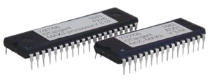

Firmware. Programové vybavení, které slouží pro řízení nějakého vestavěného systému. Firmware řídí například kalkulačky, počítačové komponenty (pevný disk, router…), mobilní telefon, digitální fotoaparát atd. Dříve byla aktualizace firmwaru realizována nahrazením paměťového média obsahujícího firmware (např. výměna ROM paměti), dnes může být novější verze firmware přepsána díky používaným flash pamětem. Základním firmwarem v počítači je BIOS, který zajišťuje především start počítače a umožňuje konfiguraci základní desky i připojeného hardware.
